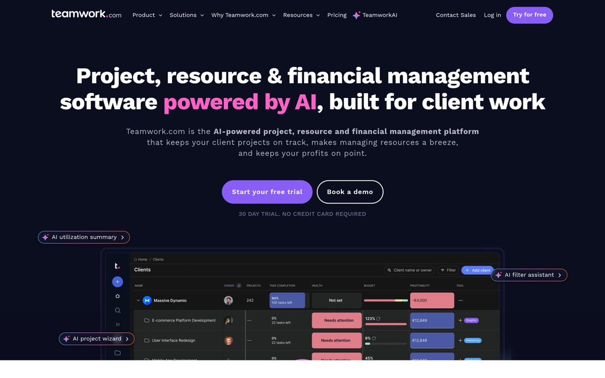
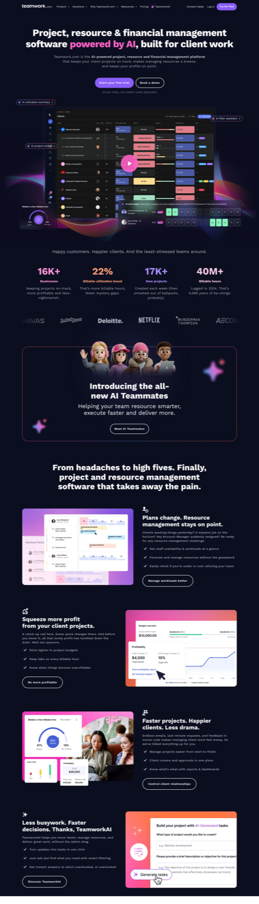
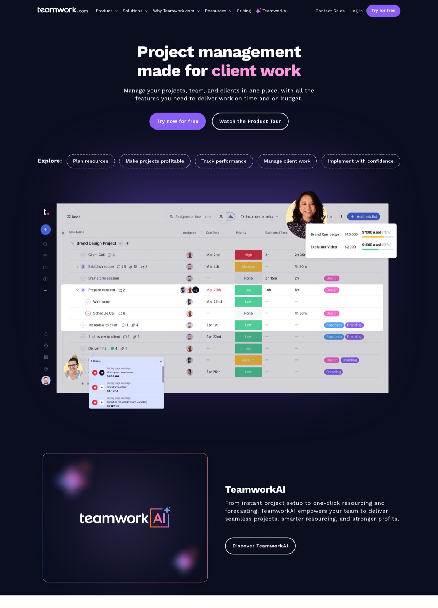
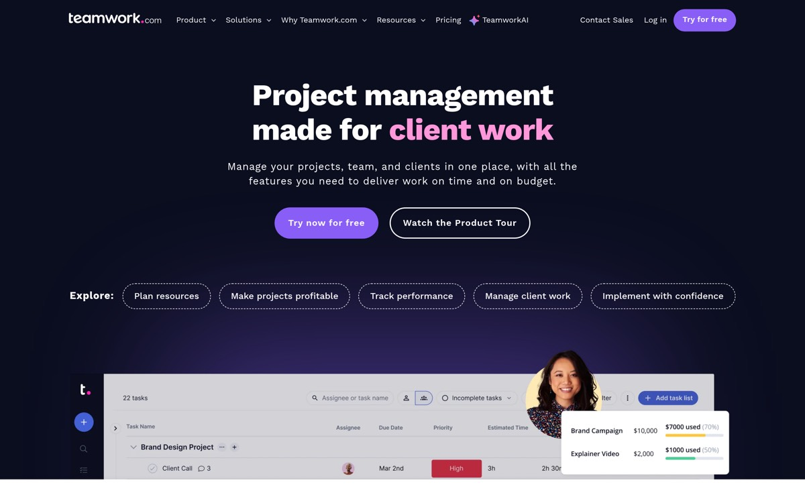
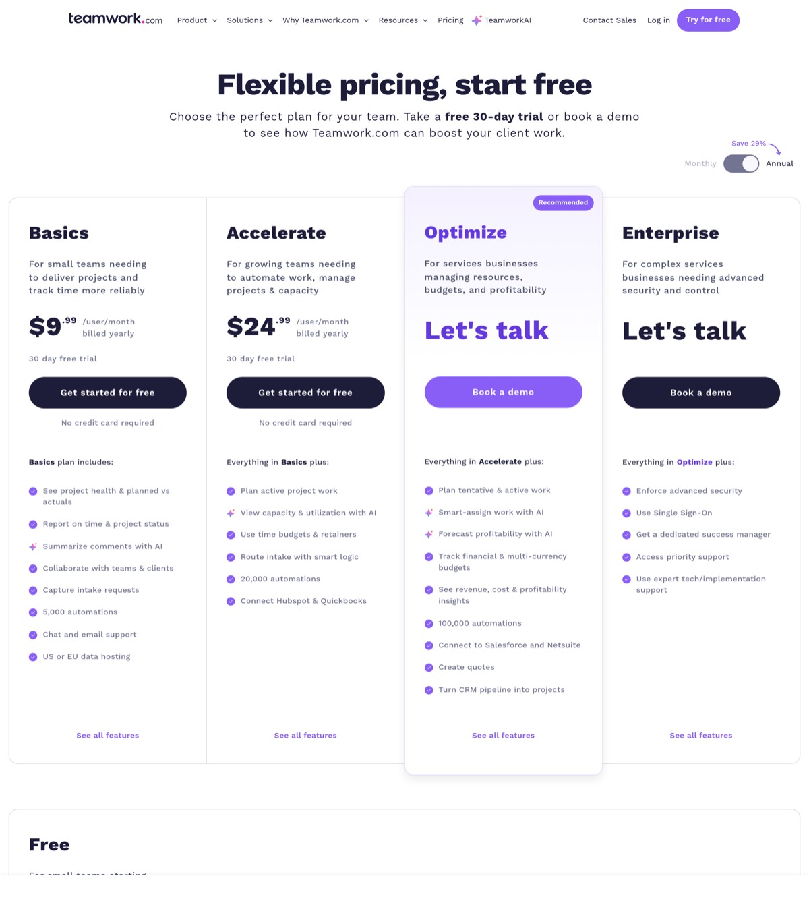

Claude Code
Design Research — Visual Teardown
April 20, 2026
Brainstorm v2 · Visuals added
Proxuma Website Redesign
Visual Teardown v2
What "As Good As Teamwork.com" Looks Like
v2 of the Proxuma redesign brainstorm — this time with screenshots from an actual render, not just HTML parsing. Opus vision corrected three things I got wrong from code alone, and surfaced one design move I completely missed.
Corrections to v1
Looking at the pixels corrected three claims from the code-only read:
- The accent isn't one saturated color — it's a pair. Hot pink for inline headline emphasis, violet for primary buttons. They sit next to each other on the spectrum but are clearly two tokens.
- The "aurora glow" around the product UI — colored gradient bloom bleeding outside the hero card — isn't decoration. It's the single thing doing most of the atmosphere work. Without it, this would be a flat dark page.
- Real human photography is used, but not as a section of its own. It's composited directly onto product UI shots (a woman's headshot half-overlapping the dashboard on the product page). This makes the app feel used, not empty.
Hero — the violet/pink double accent

Viewport hero, 1440×900. Nav is compact and top-left anchored (no mega-centering). Headline runs wide to the edges of a generous content column. The phrase powered by AI is the only pink; the CTA button and every other interactive surface use a softer violet. Subhead is ~220px wide and centered. Reassurance line reads 30 day trial. No credit card required directly under the CTAs. Below the CTAs: floating UI chips ("AI utilization summary", "AI filter assistant", "AI project wizard") placed asymmetrically on a dark-navy canvas with aurora gradient bleeding up from behind the dashboard card.
The two accents
The pink (used only for inline word emphasis in headlines) and the violet (used only on buttons and the Recommended plan) differ by about 20° on the hue wheel. That tiny gap is intentional — from a distance you read one purple brand; up close you register two distinct roles. That's the trick I missed: it looks disciplined because it looks like one color, but they actually split the job.
- Hero headline weight. Roughly 60–64px on desktop, tight letter spacing (~-0.01em), weight ~700. The font is a modern grotesk (not Inter) with a slightly narrow aperture on the lowercase — gives it editorial confidence.
- No logo wall in-view. The hero resolves fully without showing a single customer logo. Proof comes on scroll 1, not scroll 0. Confidence choice.
- Play-button overlay on the product UI. The dashboard card has a violet circle play button stamped mid-frame. That's a tell that it's actually an autoplaying silent mp4, not a static PNG.
Scroll narrative — the whole page at once

Full-page thumbnail of the homepage. Read top-to-bottom as a single story: dark hero → dark stats strip → dark testimonial band → light features section → light case-study band → dark testimonial card. The dark/light alternation I described from code is now visible as rhythm. Every dark section has pink/violet dot-glow effects sprinkled as visual breathing space. Every light section is calmer and uses navy-on-white for the product shots.
- Four-number proof strip sits immediately after the hero in a dark band. Animated count-ups (confirmed from the
<number-flow> component in the markup). Captions underneath each number are one-line personality writing ("That's more billable hours, fewer mystery gaps").
- Testimonial introduction band uses three circular headshot avatars on a dark background with the heading Introducing the all-new AI Teamworks. Photography appears — but restrained, just round portraits, no full-bleed photos.
- Features section is light with a serif-feel headline — "From headaches to high fives." Three-column card grid. Each card pairs a small overline label, a product-UI screenshot, and a one-sentence explainer.
- No gradient-on-white sections anywhere. Light sections are flat off-white. All the colored glows live in the dark sections. This is the discipline I undervalued from code alone.
Product page — the composite move

Product page, scroll position 2. This is the design move I missed entirely from code. Under the "Explore:" chip nav, the product UI screenshot has a real woman's headshot overlaid at the top-right, half-protruding above the frame. A notification popup with a second avatar sits at the bottom-left. These aren't stock photos dropped on the page — they're composited into the product shot so the dashboard reads as "used by real humans right now." No SaaS site I've analyzed does this so cleanly.

Product page hero viewport. Same structural DNA as the homepage: dark navy, inline pink accent on client work, twin CTAs (violet primary + ghost secondary), chip nav. The chips are pill-shaped, outlined white on dark, and aren't just visual — they're scroll-anchor tabs for the six deep sub-sections. Every product area gets its own chip. This is the "jump nav" pattern applied well: it sets reader expectations for a long page before they scroll.
Pricing — "Recommended" wears the whole color

Pricing page, above fold. Four paid plans visible at once (Free lives below). Three things to note. (1) The Recommended plan — "Optimize" — uses the violet accent as a full card wash, not just a button. That's the first time violet is allowed to dominate anything. (2) Plan headings are set in the same display face as the homepage H1 but smaller; they read as "chapter titles" for each column. (3) Feature checkmarks are purple filled circles, not generic green checks — tiny custom detail that signals brand care. Toggle is top-right with "Save 29%" attached via hand-drawn arrow. The specificity of the number (29, not 30) reads as honest.
Pattern to steal
The "Recommended" plan wears the whole color. Every other plan is black-on-white. Only one card uses the accent as a background wash, with the CTA in the same wash but inverted. You don't need a "MOST POPULAR" sash if the card itself is the sash. Proxuma's pricing page can do this with teal as a full wash on one recommended tier.
Updated secret-sauce list (now with evidence)
1. Two accents posing as one
Pink for inline keyword emphasis; violet for buttons + the recommended plan. ~20° hue apart. Reads as one disciplined brand from a distance.
2. Aurora glow behind the hero card
Pink/violet/orange gradient bleed from behind the product UI does 80% of the mood work. Without it, the hero is a flat dark page. Cheap to implement, high visual return.
3. Composited human + product UI
Headshots overlaid onto the product shot instead of beside it. Makes the app look inhabited. Rarely seen, very effective.
4. Dark/light scroll rhythm
Alternating section tones, with all the colored glow effects reserved for dark bands and light sections kept calm and flat.
5. Play-button-on-screenshot = silent mp4 loop
Visible violet play circle on the hero dashboard. Real product motion, self-hosted, no YouTube chrome.
6. Chip-nav scroll anchors on deep pages
Product page opens with "Explore: [chip] [chip] [chip] [chip] [chip]" — sets reader expectations and becomes a sticky scroll-spy tab bar.
7. Recommended plan wears the full accent wash
Only one of four pricing cards is colored. That card becomes the visual focal point without a "MOST POPULAR" label.
8. Custom-colored bullet points and checkmarks
Purple filled circles on pricing feature lists — not the default green check icon. Tells the visitor the brand team owned every pixel.
9. Specificity over roundness in microcopy
"Save 29%" not "Save 30%". "30 day trial. No credit card required" not "Free trial." Specificity reads as honesty.
Translating for Proxuma
Your existing Nuxt 3 frontend can carry every one of these moves. None require new infrastructure. Here's the color + type decision updated after looking at pixels rather than source code.
Updated palette proposal
Mirror teamwork's two-accent trick. Teal (#0f766e, already alive in your Power BI reports) plays the "pink inline emphasis" role. Mint (#00D9A5, already in the report CTA system) plays the "violet button" role. They're from the same family but differ enough to divide labor. Navy and warm off-white carry the structure. Deep dark is used only on feature-demo bands for the aurora glow.
Hero composition (specific)
- Dark navy hero, 700–800px tall.
- Headline ~60px, weight 700, with one phrase inline-teal — e.g., "Power BI reports built for your PSA, without the BI team."
- Twin CTAs: Mint primary ("Start free trial") + ghost secondary ("Book a walkthrough"). Reassurance line: "Free 14-day trial. No credit card."
- Behind the card: a teal-to-mint-to-violet aurora gradient that bleeds outside the Power BI report frame.
- Overlay one real MSP owner's headshot on the report corner, plus a small notification chip elsewhere. The Power BI report becomes the dashboard + the person using it.
Page inventory (revised)
| Page | Scroll 1 visual move | Hero motion |
|---|
| Home | Aurora-backed report + human overlay | Silent mp4 of a report scrubbing through filters |
| Product | Chip nav + 6 anchor sections | Per-section mp4 of DAX toggles, AI panel, gallery |
| Pricing | Recommended plan in teal wash | Animated price count-up on annual/monthly toggle |
| Reports gallery | Filterable grid w/ MSP-relevant tags | Per-report hover preview, not click-through |
| vs Competitors | Direct comparison tables | Side-by-side screenshot slider |
| Customers | Named NL MSPs + outcome metrics | Short video testimonial clip per card |
Bottom line (updated)
The pixels confirm it's discipline, not features — with three refinements
The code-level read was right about the principles. Seeing the rendered page added specifics: the accent is a pair, not a single; an aurora gradient behind the hero card is the single cheapest atmosphere move you can make; and compositing human headshots onto the product UI is the rarest high-ROI move — almost nobody does it, and it immediately signals "this is used by real people."
For Proxuma specifically, those three things map cleanly onto teal + mint as a twin accent, a teal-to-mint glow behind the existing Power BI report frames, and photos of real NL MSP owners overlaid on the report corners. None of those cost more than craft time. The Nuxt stack already supports all of it.
Open questions (unchanged from v1)
- Is this a proxuma.io marketing-site rebuild, or does it also cover the in-app dashboard?
- Is proxuma.io currently on WordPress/SiteGround, or already a Nuxt marketing site?
- Budget for a paid display typeface license (~€400–2,000), or stick to free-but-distinctive?
- Dutch/English bilingual from day one, or English first?
- Ask-an-LLM buttons in or out?
- New after visual review: Are you OK commissioning real photos of NL MSP owners/staff for the human-overlay move, or keep it illustration-only?